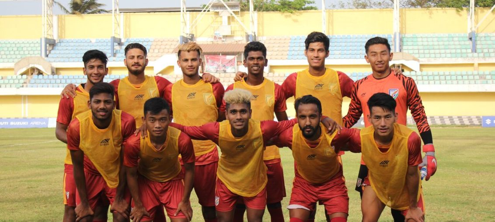

Posted at Date: March 07, 2019
Credit : রাইট স্পোর্টস ওয়েব ডেস্ক
এএফসি২৩: নামই তুলে নিল পাকিস্তান, খেলতে হচ্ছে না ভারতের বিরুদ্ধে

বিশ্বকাপ ক্রিকেটে ভারত-পাকিস্তান ম্যাচ নিয়ে প্রচুর আলোচনা! নিউজপ্রিন্ট খরচ হয়েছিল, হচ্ছেও। কিন্তু এএফসি অনূর্ধ্ব২৩ ফুটবলের বাছাইপর্বে ভারতের গ্রুপেই যে পাকিস্তান ছিল, তেমন উচ্চবাচ্য হয়নি। সর্বভারতীয় ফুটবল সংস্থা যদিও জানিয়েছিল কেন্দ্রীয় সরকারকে। কোনও সিদ্ধান্ত জানানো হয়নি সরকারিভাবে। সমস্যার সমাধান অবশ্য হয়ে গেল! প্রতিযোগিতা থেকে নামই তুলে নিল পাকিস্তান! গ্রুপ এফ-এ ভারতের সঙ্গে ছিল উজবেকিস্তান, তাজিকিস্তান এবং পাকিস্তান। সরকারিভাবেই পাকিস্তান নাম তুলে নেওয়ায় এখন গ্রুপে তিনটি দেশ। ভারতের দুটি ম্যাচ যথাক্রমে ২২ মার্চ (উজবেকিস্তান) এবং ২৪ মার্চ (তাজিকিস্তান)। খেলা হবে তাসখেন্দে।
পাকিস্তান নাম তুলে নেওয়ায় সমস্যা হয়ে গেল প্রতিযোগিতার ফরম্যাট নিয়েই। ঠিক ছিল, ১১ গ্রুপ থেকে বিজয়ীরা তো যাবেই, বাকি গ্রুপগুলি থেকে সেরা চার দ্বিতীয় স্থানাধিকারী দল পৌঁছবে প্রথম ১৬য়, আয়োজক থাইল্যান্ডকে ধরে। থাইল্যান্ড যদি গ্রুপ শীর্ষে শেষ করে, পাঁচ সেরা-দ্বিতীয় দেশ পাবে সেই সুযোগ। এখন সমস্যা, একটি গ্রুপে তিনটি দেশ হয়ে যাওয়ায় সেই গ্রুপের (মানে, ভারতের) সেরা দলদুটির প্রাপ্ত পয়েন্ট অন্য গ্রুপগুলির তুলনায় কম হবে। তাই এএফসি সিদ্ধান্ত নিয়েছে, বাকি দশটি গ্রুপের খেলা শেষ হওয়ার পর, চতুর্থ স্থান পাওয়া দলের বিরুদ্ধে প্রথম তিনটি দলের প্রাপ্ত পয়েন্ট বিচার্য হবে না। পাকিস্তানের সমস্যা অবশ্য অন্য। এক মাস আগে নাম তুলে নেওয়ার সিদ্ধান্ত জানালে ১০ হাজার মার্কিন ডলার জরিমানা দিতে হত। এখন যেহেতু প্রতিযোগিতার বাকি মাত্র ১৫ দিন, অন্তত ২০ হাজার মার্কিন ডলার জরিমানা তো দিতেই হবে, এএফসি কী সিদ্ধান্ত নেয় জানার জন্য অপেক্ষাও করতে হবে। পাকিস্তানে এখন দুটি ফুটবল সংস্থা। একটির অনুমোদন এসেছে ফিফা থেকে, অন্যটি চলছে সেই দেশের সুপ্রিম কোর্টের অনুমোদন পেয়ে। দুই সংস্থার দ্বন্দ্বই মূল কারণ, দল না-পাঠানোর।
তবে, পাকিস্তানের এই সিদ্ধান্তে সমস্যা রইল না ভারতের। ২০২০ এএফসি অনূর্ধ্ব২৩ প্রতিযোগিতার জন্য এখন খোলামনে প্রতিযোগিতায় খেলতে যেতে পারবেন কোচ ডেরিক পেরিরা ও তাঁর ফুটবলাররা। আগামী ১১ মার্চ কাতারের বিরুদ্ধে প্রীতি ম্যাচ খেলতে দোহা যাচ্ছে ভারতীয় অনূর্ধ্ব২৩ দল।
Top Stories

Calcutta Sports Journalists' Club requests the pleasure of your company at its annual awards functionMore...

Jasprit Bumrah has been declared fit and he will now be available for selection for India's third Test against England at Trent Bridge. More...

Ronaldo has increased Juventus' standing among Europe's elite. More...